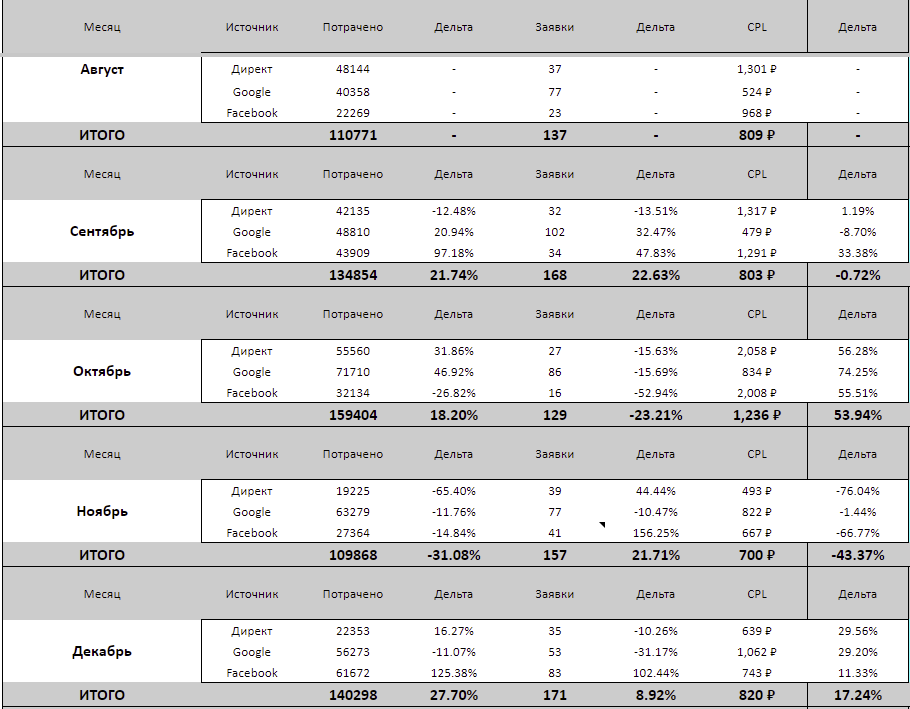
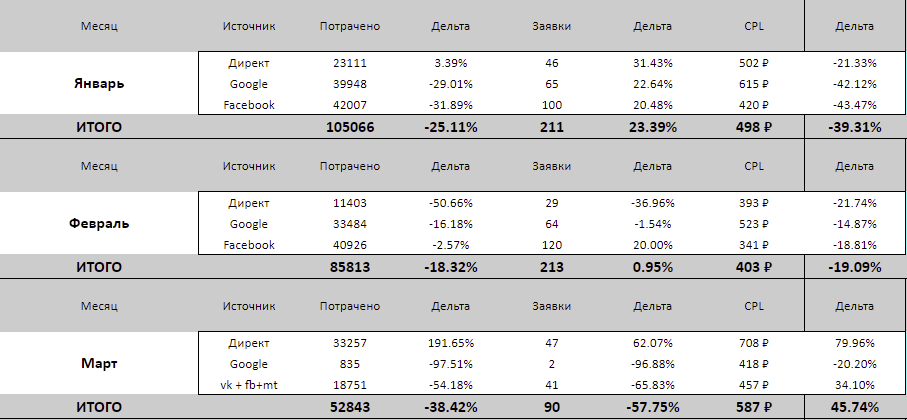

Переход с привычного Google Ads и FB* на Я.Директ и vk
Да, сейчас это звучит непривычно.В 2025 мы уже не работаем с такими связками — рынок изменился, появились новые инструменты и подходы. Но кейс реальный, и происходил он в 2021 году — тогда переход на Я.Директ и VK, которые еще не были базой, действительно дал отличный результат.
Сегодня — другие инструменты, другие алгоритмы, другие решения. Хотите знать, какие? Напишите — расскажем.
А теперь вернемся в 2021 год — в самое начало этой истории.
Премиум фитнес-клуб «Джиматика» в Краснодаре
Сайт:https://www.gymatica.ru/
Сообщество в vk:https://vk.com/gymatica
Задача: увеличить количество обращений
KPI:мин. 100 обращений в месяц, максимальный CPL = 900 ₽
Работа над проектами в рамках NUTS Digital началась в августе 2021 года. По сей день работа продолжается, поэтому этапы работ разделим на два периода: до 24 февраля, когда были всем привычные Google Ads и Facebook Ads, и после 24 февраля, когда основными источниками трафика стали отечественные платформы Яндекс.Директ и VK Ads.
Немного коснемся результатов до событий февраля, а затем более подробно рассмотрим все, что было после этого месяца перемен, так как рекордные показатели были получены именно после 24 числа.
На старте работ тестировали три источника: Facebook Ads, Google Ads, Яндекс.Директ. Результаты первого месяца работ превышали согласованные KPI по стоимости заявки, если брать каждый источник по отдельности. В совокупности мы остались в пределах KPI. С легкостью получилось выполнить минимальную норму по количеству обращений. Ниже указаны результаты по каждому источнику и общий результат первого месяца.
Я.Директ
Обращения: 37
CPL: 1 301 ₽
Google Ads
Обращения: 77
CPL: 524 ₽
Facebook
Обращения: 23
CPL: 968 ₽
ИТОГО:
Обращения: 137
CPL: 809 ₽
Теперь перед нами стояла задача выравнивать ситуацию по стоимости обращений по FB и Яндекс.Директу. А также попробовать масштабироваться, оптимизировав РК, которые только набрали статистику. Хочется отметить, что в данной нише очень большое влияние оказывает сезонность.
Для того, чтобы поскорее перейти к описанию работ, которые привели к рекордному результату 36 рублей за обращение, ниже прикреплен скриншот результатов по источникам до 24 февраля. Для собственного удобства результаты перенесли в Google Таблицы, однако в качестве инструмента аналитики используем Roistat.


В отчете за март 2022 видно, что добавились два новых источника трафика: ВК и Одноклассники. О них подробнее расскажем с апреля, так как подключили их в качестве основных источников только в конце марта.
Итак, если еще в феврале и марте общая CPL была рекордно низкая в силу сезонности, то в апреле стоимость поползла вверх. Очевидно, повлияло и то, что головы людей сейчас были заняты другими вещами, а также переход на новые источники трафика, где только предстоит "нащупать" рабочие связки.